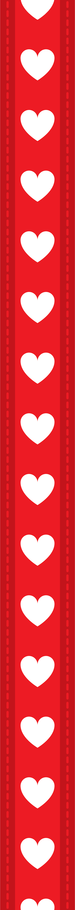
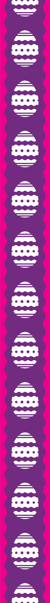
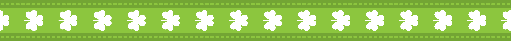
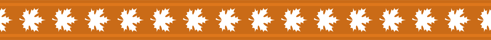

"Sensei,when it comes to your own webpage, I am concerned about what I can't say. I know you swallowed something that you wanted to share. From our path to be friends, we first had slience, we then had anxiety, we finally had laughter. I am very thoughtful that I have a friend like you who I can be stupid with, who I can be around with, who I can talk worries with."
We fooled around the school with some other classmates; we kicked shuttlecock with others; we also imitated each other's homework. Sometimes I was curious why we couldn't talk more but chose tranquility as to end our reunion everytime. I finally understand this scene: "we come to see each other 'face-to-face' with smile; we leave 'back-to-back' with hesitation of that if we could stay longer".
Romaji, the word you once mentioned is the writting system of Language Japanese that I learnt some Japanese English from. Likely, you taught me with words more than actions, so then I showed more interests in Japanese. Therefore, thanks, sensei; even I need to thanks your nickname I made by borrowing from Japanese that it frequently reminds me of not giving up easily.
at present , I merely know as friends, we can be some cups of hot tea that whenever you feel lonely , and there will be warm friendship coming to you;